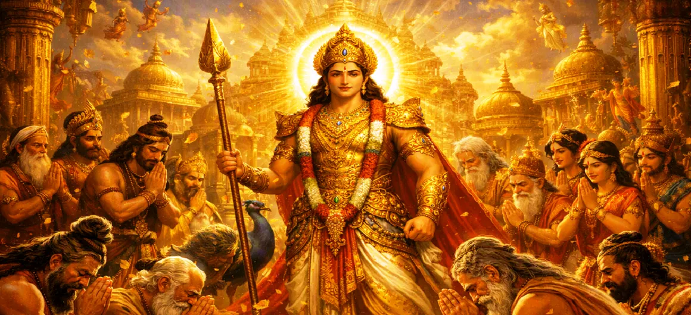

Kumāra Appointed Commander of the Gods
Chapter 20 of the Kumara Khanda recounts the grand, historic coronation where young Kumara is formally and joyfully appointed as the supreme commander-in-chief (Senapati) of the celestial armies.
With the divine weapons bestowed and his supreme powers fully demonstrated, the entire universe unites to place its destiny in his invincible hands.
Chapter 20 Highlights & Full Overview
Grand Coronation
Formally installing young Skanda as supreme commander.
Senapati Title
Bestowing the supreme leadership of the divine hosts.
Brahma’s Decree
Official proclamation by the creator of the universe.
Celestial Jubilation
Rejoicing across the heavens with music and flower showers.
Unanimous Trust
All devas surrendering their command to the divine child.
Army Assembly Stage
Paving the way for the gathering of the grand divine army.
Core Topics Detailed in This Chapter
- 01The Consensus of the Devas for Supreme Leadership→
- 02Brahma Proclaims Kumara as Senapati→
- 03The Sacred Anointing and Coronation Ritual→
- 04Rejoicing and Blessings from Indra and the Devas→
- 05Kumara’s Gracious Acceptance of Command→
- 06The Awakening of Universal Hope and Strength→
- 07Transition to Chapter 21 (The Divine Army Assembles)→
1. The Consensus of the Devas for Supreme Leadership
With young Kumara now equipped with celestial weapons and having proven his unmatched martial prowess, the deities hold a formal council in Saravana. Recognizing that a unified, powerful, and divine commander is absolutely essential to lead them against the tyrannical Tarakasura, they unanimously agree to vest all military authority in Lord Skanda.
2. Brahma Proclaims Kumara as Senapati
Lord Brahma, the creator of the universe, steps forward to officially read out the divine decree. Addressing the entire assembly of sages, gandharvas, and devas, Brahma solemnly proclaims that young Kumara is appointed as the supreme Senapati (commander-in-chief) of the celestial forces, destined to conquer darkness and restore eternal righteousness.
3. The Sacred Anointing and Coronation Ritual
The text describes a magnificent coronation ritual. Sacred waters collected from holy rivers across the cosmos are poured over Kumara amidst the chanting of powerful Vedic mantras. He is adorned with divine garlands, brilliant ornaments, and a majestic commander's crown, transforming the quiet reed grove into a dazzling imperial court of heaven.
4. Rejoicing and Blessings from Indra and the Devas
Overjoyed by this historic event, Indra steps down from his throne-like posture to offer his deepest respects, declaring that heaven is now secure under Skanda's leadership. Celestial musicians play joyous melodies, apsaras dance in celebration, and showers of sweet-scented flowers rain down from the heavens, filling every heart with euphoria.
5. Kumara’s Gracious Acceptance of Command
Accepting the supreme responsibility with profound grace and majestic poise, young Kumara reassures the gathered assembly. With a gentle smile across his six faces, he vows to protect the righteous, vanquish the wicked demonic forces, and restore peace to the three worlds, instilling absolute confidence in all his followers.
6. The Awakening of Universal Hope and Strength
The appointment of Kumara marks a massive psychological and spiritual turning point for the cosmos. The fear and helplessness that had plagued the gods for centuries completely dissolve, replaced by an unbreakable spirit of courage, unity, and readiness for the impending liberation of the universe.
7. Transition to Chapter 21 (The Divine Army Assembles)
With Kumara formally installed as their supreme commander-in-chief, the heavenly hosts are now ready to organize for war. This sets the direct stage for Chapter 21: **The Divine Army Assembles**, where millions of celestial soldiers, heroic generals, and divine forces gather around Skanda to march toward the battlefield.
Key Teachings and Spiritual Takeaways of Chapter 20
Righteous Authority
True leadership is born from divine grace and unmatched capability.
Unified Command
Victory requires centering power under one supreme, enlightened leader.
Sacred Coronation
Official sanction and blessings empower higher duties.
Restoration of Hope
The rise of a righteous leader immediately dispels despair.
Protection of Dharma
The commander’s primary vow is the safeguarding of cosmic order.
Preparation for Battle
Leadership establishment paves the way for organized action.
Spiritual Reflection
Chapter 20 teaches us that when chaos threatens existence, true order is restored only when leadership is handed over to higher divine principles. In our personal spiritual journey, appointing the Divine as the commander of our mind and actions ensures victory over inner turmoil and darkness.
Living the Message of Chapter 20
Surrender your inner chaos to higher wisdom and allow divine principles to guide your life.
Support righteous leadership that stands for truth, justice, and spiritual upliftment.
Approach your responsibilities with courage, dignity, and unwavering commitment.
Key Spiritual Concepts
Senapati-Abhisheka
The sacred coronation and anointing of Kumara as commander-in-chief.
Deva-Samanta-Niyoga
The unanimous appointment of Skanda by all celestial powers.
Brahma-Ghoshana
The official proclamation of leadership made by Lord Brahma.
Makkuta-Dharana
The bestowing of the majestic crown of command upon the Lord.
Bhaya-Nivarana
The total eradication of fear and despair among the gods.
Vijaya-Adhikara
The official authorization and empowerment to secure ultimate victory.
The sacred coronation and anointing of Kumara as commander-in-chief.
The unanimous appointment of Skanda by all celestial powers.
The official proclamation of leadership made by Lord Brahma.
The bestowing of the majestic crown of command upon the Lord.
The total eradication of fear and despair among the gods.
The official authorization and empowerment to secure ultimate victory.
Chapter Summary
Kumara Khanda Chapter 20 narrates the grand and historic coronation ceremony in Saravana where Brahma, Indra, and the assembled deities formally appoint young Kumara as the supreme commander-in-chief (Senapati) of the celestial armies, filling the cosmos with renewed hope and strength.
Frequently Asked Questions
1. What is the detailed focus of Kumara Khanda Chapter 20?
Chapter 20 focuses on the grand coronation and formal installation of young Kumara as the supreme commander-in-chief (Senapati) of the celestial armies to lead the war against Tarakasura.
2. Who performs the appointment ceremony for Kumara?
The appointment ceremony is led by Lord Brahma, Indra, and the assembled deities amidst sacred chants and grand celebrations in Saravana.
3. What title is bestowed upon young Skanda in this chapter?
He is formally bestowed with the title of Senapati (Commander-in-Chief) of the divine hosts.
4. What chapter follows Chapter 20?
The next chapter is Chapter 21, titled 'The Divine Army Assembles'.
“Crowned as the supreme commander of the divine hosts, young Kumara became the beacon of absolute hope and invincibility for the cosmos.”
Continue Through Kumara Khanda
Chapter 20 details Kumara's appointment as commander. Continue to the next chapter, The Divine Army Assembles.